地政学
アブジャはラゴスの沿岸偏重を避け、ナイジェリア中央部に置かれた連邦首都です。北部、南部、中帯、石油地帯、サヘル、湾岸を結ぶ政治の舞台として、国家統合と治安の課題を同時に受け止める街でもある要所です。
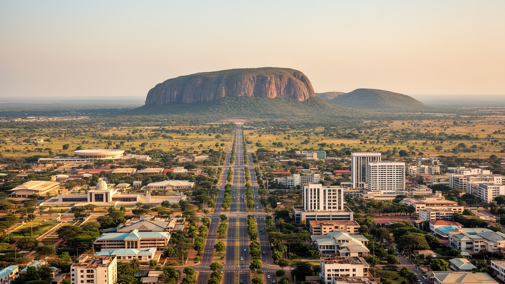
🇳🇬 ナイジェリア / 連邦首都地区 / World City Atlas
ナイジェリアの中央部に建設された計画首都です。アソロックの麓に連邦政府、外交団、宗教施設、建設経済、衛星都市、若い労働市場が集まり、巨大国家の均衡を都市空間で表します。
都市の骨格
アブジャはラゴスから首都機能を移すため、民族、宗教、地域の均衡を意識して内陸中央部に建設されました。広い幹線道路、行政地区、外交街、計画住宅、衛星都市の膨張が、連邦国家の理想と現実を同じ地図に置きます。
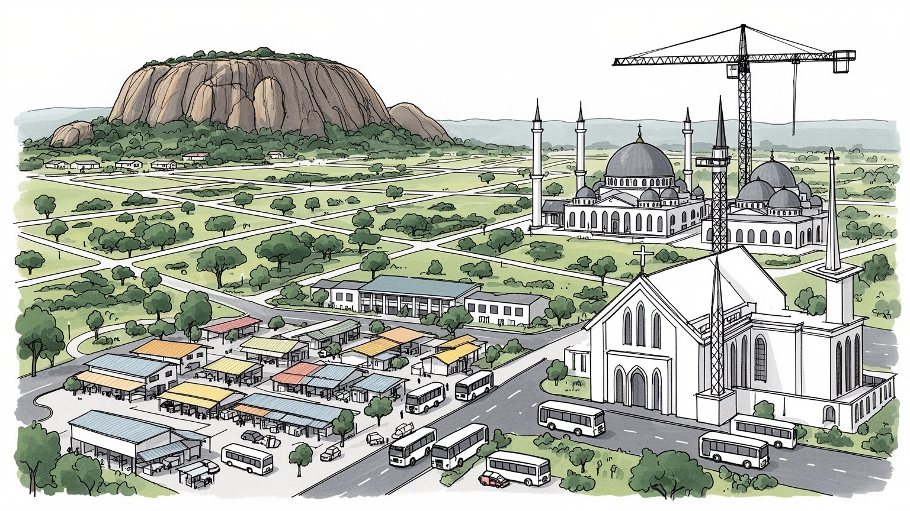
アブジャはラゴスの沿岸偏重を避け、ナイジェリア中央部に置かれた連邦首都です。北部、南部、中帯、石油地帯、サヘル、湾岸を結ぶ政治の舞台として、国家統合と治安の課題を同時に受け止める街でもある要所です。
行政、外交、建設、不動産、金融、通信、教育、ホテル、交通、警備、家事労働が雇用を作ります。官僚街と衛星都市から通う若い労働者、夜の屋台、配車アプリが同じ都市経済を支えます。路上商いも夜まで粘ります。
国立モスクと国立教会、英語、ハウサ語、ヨルバ語、イボ語などが近接します。首都は一つの民族都市ではなく、婚礼、礼拝、映画、音楽、市場食、ラジオを通じて多声性を調整します。祝祭の音と踊りも街を結びます。
旅行者はアソロック、国立モスク、芸術村、市場、湖畔を訪ねますが、住民は家賃、渋滞、水、電気、学校、治安情報に向き合います。雨季のぬかるみと乾季の埃も暮らしを形作ります。夜の屋台の光も道を照らします。
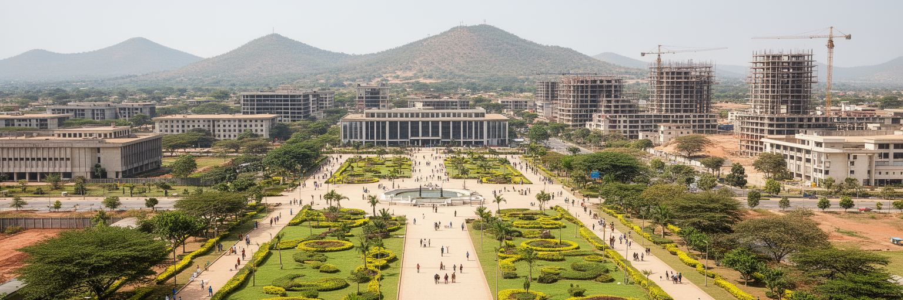
アブジャは、単に行政機関を移した都市ではありません。ラゴスの混雑、沿岸部への偏り、民族と宗教の緊張、連邦国家としての象徴を考え、国土の中央に新しい首都を置く構想から生まれました。1970年代に連邦首都地区が定められ、1980年代以降に道路、官庁、住宅地区、外交地区が整えられ、1991年に首都機能が移りました。計画図では、広い幹線道路、緑地、行政軸、住宅フェーズが整然と描かれたが、実際の成長は人口流入、土地価格、非公式居住、衛星都市の膨張によって複雑になりました。アブジャを読むには、理想の首都としての幾何学と、働き口を求めて集まる人々の生活地図を重ねる必要があります。中心部の大通りや官庁街は国家の威信を示しますが、都市の本当の姿は、郊外のバス停、建設現場、借家、市場、学校へ向かう長い移動にも現れます。計画首都は完成した作品ではなく、巨大国家が自分の均衡を日々作り直す実験です。設計された秩序と、予測を超える都市化がぶつかる場所に、アブジャの現代性があります。先住のグバギ系共同体や周辺村落の記憶も、整った区画の下に残ります。首都建設は新しい国民的中心を作りましたが、移転、補償、土地の帰属をめぐる問いを消したわけではありません。地方から来た人が公共空間をどう使うかも、統合の成否を測る指標になります。
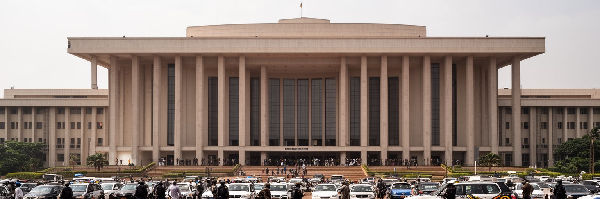
アブジャには大統領府、国会、最高裁、連邦省庁、政党、選挙機関、各州政府の連絡拠点が集まります。ナイジェリアは人口、民族、宗教、地域経済、石油収入、治安問題が極めて大きく、首都の政治は常に配分と代表の交渉になります。北部の農牧民、南部の商業都市、ニジェールデルタの石油地帯、中帯の土地紛争、ラゴスの金融と港湾、北東部の治安危機は、すべてアブジャの政策決定に影響します。広い道路と整った行政街は落ち着いて見えますが、その背後では予算、任命、選挙、補助金、治安、司法、連邦制の調整が重なります。首都での一つの決定は、遠い州の学校、燃料価格、警備、道路建設、地方自治体の給与へ波及します。だからアブジャの政治性は、建物の大きさではなく、国全体から持ち込まれる要求の多さにあります。官庁の前で待つ人、議会周辺の記者、ホテルで交渉する州関係者、抗議の集まりは、連邦国家の制度が都市の時間を作っていることを示しています。アブジャは権力の舞台であり、同時に国家が分裂しないための調整室でもあります。選挙期には宿泊、交通、警備、メディアの需要が高まり、ラジオとSNSの速報が街の緊張を速く伝えます。制度の信頼は、結果の受け止め方だけでなく、首都で誰が発言できるかにも表れます。政策の言葉が市場や学校へ届くまでの距離も、この都市で可視化されます。そこに首都の重みがあります。
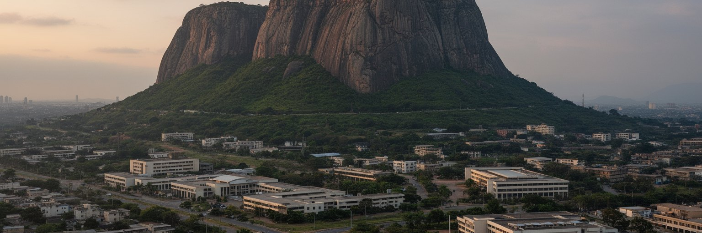
アブジャの景観で最も強い印象を残すのは、都市の東側にそびえるアソロックです。花崗岩の大きな岩山は、行政地区、三権の施設、大統領府周辺を見下ろし、新しい首都に古い地形の重みを与えています。計画都市はしばしば人工的に見えますが、アソロックや周囲の丘陵、サバナの植生は、都市が完全に白紙から作られた場所ではないことを示します。広い道路、ロータリー、官庁の軸線、低層の緑地、宗教施設のドームや塔は、岩山を背景にして首都らしい構図を作ります。一方で、景観の整った中心部から少し離れると、建設中の街区、未舗装の道、急な斜面の住宅、採石や土砂の問題も見えます。アソロックは観光名所であるだけでなく、権力の象徴、自然地形、都市計画、土地利用の緊張を重ねる目印です。岩山を美しい背景として見るだけでは、そこに隣接する警備、開発規制、周辺住民の移転、都市の拡大圧力を見落とします。アブジャの景観は、国家の威信を演出する広さと、地形に沿って広がる生活圏の現実が同居しています。岩山は首都の中心を示すと同時に、計画都市にも土地の記憶があることを教えます。乾季の茶色い丘と雨季の緑は、同じ都市を別の表情に変えます。景観管理は観光だけでなく、斜面開発、排水、採石、緑地保全をめぐる生活政策でもあります。遠くから見える岩山は、住民が自分の位置を確かめる日常の目印でもあります。
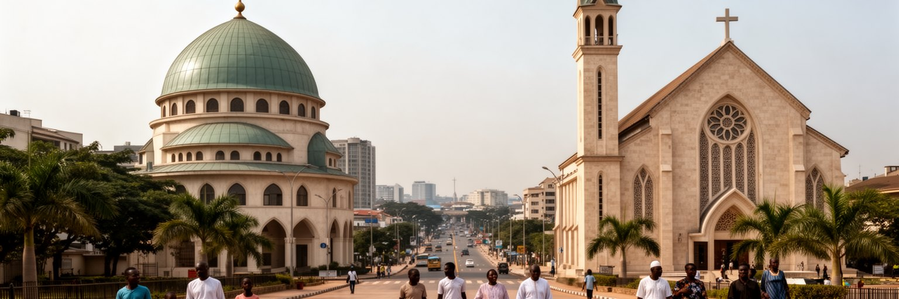
アブジャは、ナイジェリアの宗教的多様性を最も意識的に見せる首都です。国立モスクと国立キリスト教センターは互いに近い距離に置かれ、イスラムとキリスト教が大きな人口を持つ国の均衡を象徴しています。礼拝は信仰の実践であると同時に、政治的な代表、祝祭、葬儀、結婚、慈善、教育、地域のつながりを支える制度でもあります。北部から来た商人、公務員、学生、南部から来た専門職、建設労働者、移住家族が同じ都市で暮らすため、宗教施設は出身地を越えた相談の場にもなります。宗教は時に対立の言葉で語られますが、アブジャの日常では、隣人の式に参加し、市場で信用を結び、学校や病院を支える生活の基盤でもあります。首都が宗教的に中立であることは、宗教を消すことではなく、異なる祈りの場が公共空間の中で共存できる条件を作ることです。金曜礼拝や日曜礼拝の人の流れ、ラマダンやクリスマスの都市のリズムは、政治制度だけでは測れない共同性を作ります。アブジャの宗教景観は、巨大国家が互いの違いを完全に解決できなくても、同じ首都を使い続ける方法を探していることを示しています。宗教行事の日には交通や商売の時間も変わり、都市全体が暦を共有します。祈りの場は国家の象徴であると同時に、移住者が孤立を避ける入口にもなります。対話の場が保たれることは、首都の公共性を守る実務でもあります。
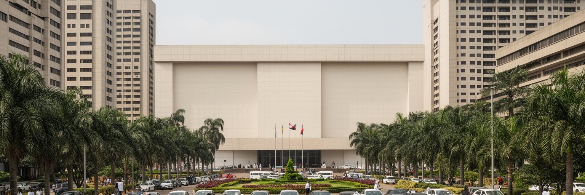
アブジャはナイジェリアの首都であるだけでなく、西アフリカ外交の重要な舞台でもあります。ECOWASの本部機能、大使館、国際機関、地域安全保障の会議、選挙監視、経済統合の協議が集まり、周辺国の政変、国境問題、通貨、移民、平和維持がこの都市で話し合われます。ナイジェリアは人口と経済規模が大きく、地域の軍事、エネルギー、金融、文化に強い影響力を持つため、アブジャでの外交は国内政治と切り離せません。ホテル、会議場、空港、警備会社、通訳、運転手、通信、印刷、レストランは、外交都市の見えにくい労働を支えています。首脳会議のニュースだけを見ると華やかですが、実際にはビザ、移動、治安情報、停電対策、短期滞在者向け住宅などの細かな都市サービスが国際機能を成り立たせます。アブジャの外交性は、旧宗主国との関係だけでなく、ニジェール、ベナン、チャド、カメルーン、ガーナ、マリ、セネガルなどとの日常的な地域交渉にあります。内陸中央部の計画首都は、港湾都市ではありませんが、政治的には西アフリカを外へつなぐ玄関になります。ここでは国際関係が、会議室と市内の交通、警備、宿泊経済を通じて都市の仕事に変わります。地域危機が起きるたびに、記者、仲介者、専門家、支援機関が集まり、首都のホテルや空港は情報の結節点になります。外交都市の顔は、会議後に残る人脈と実務の積み重ねで強くなります。
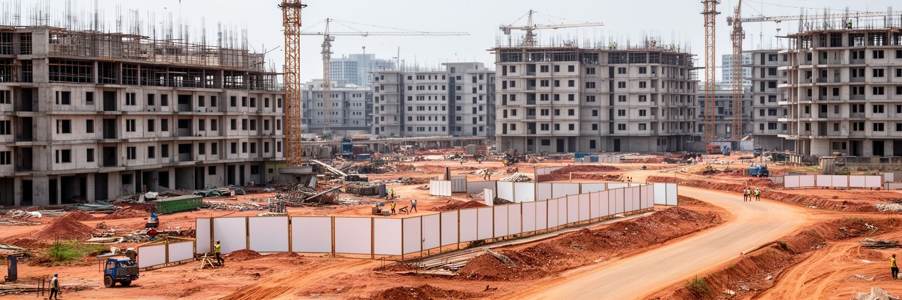
アブジャの都市経済を動かしてきた大きな力は建設と不動産です。官庁、住宅団地、ホテル、ショッピング施設、道路、橋、学校、病院、宗教施設、民間オフィスが次々に建てられ、セメント、鉄筋、タイル、運送、設計、警備、清掃、家事労働まで広い雇用を生んできました。首都としての地位は土地の価値を押し上げ、投資と投機を呼び、中心部では高級住宅やゲート付き地区が増えます。一方で、建設現場で働く多くの人は衛星都市や非公式居住地から長く通い、家賃の上昇や立ち退きの不安を抱えます。新しいビルは成長の象徴ですが、その陰には土地権利、補償、移転、低所得住宅の不足、都市サービスの遅れがあります。アブジャを建設都市として読むには、完成した外観よりも、誰が土地を得て、誰が移され、誰が通勤し、誰が清掃し、誰が利益を得るかを見る必要があります。建設は経済を広げますが、公共交通、給水、学校、排水、手頃な住宅が追いつかなければ、都市の格差も広げます。アブジャの不動産市場は、国家の威信と家計の不安が交差する場所であり、計画首都の未来を左右する最大の生活問題の一つです。空き地の囲い、未完成の高層棟、急に上がる地代は、都市の成長が必ずしも居住の安定を意味しないことを示します。昼の暑さの中で働く職人や資材を運ぶ若者の安全と賃金も、成長の質を測る大切な物差しになります。
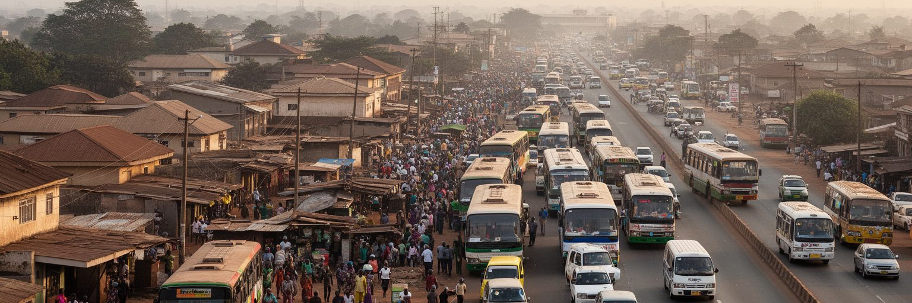
アブジャの成長は、中心部だけでは理解できません。クブワ、ニャニャ、カル、グワグワラダ、ルグベ、クジェ、スレジャ方面など、衛星都市と周辺居住地が首都の実際の生活圏を作っています。中心部の家賃が高く、計画地区の土地利用が厳しいため、多くの公務員、警備員、運転手、教師、看護師、店員、建設労働者、家事労働者は郊外に住み、朝夕の渋滞を耐えて通います。幹線道路は都市をつなぐ動脈ですが、事故、燃料価格、バス運賃、検問、雨季の道路状態が通勤の負担を増やします。衛星都市には市場、学校、教会、モスク、診療所、修理店、屋台が育ち、単なる寝る場所ではなく独自の都市生活を持ちます。一方で、水道、排水、電力、ごみ収集、土地登記、公共交通は不足しやすいです。アブジャの中心部が整って見えるほど、周縁の生活コストは見えにくくなります。首都の行政、外交、ホテル、商業が毎日動くのは、郊外から来る労働に支えられているからです。衛星都市を都市計画の外側として扱うと、首都の本当の人口、交通、住宅需要を読み誤ります。アブジャの公平性は、中心部の美しさよりも、周縁から安全に働きに行けるかで測られます。バス停の混雑、早朝の出発、帰宅後の水くみは、通勤が単なる移動ではなく生活時間全体を支配していることを示します。学校や診療所が近くに増えれば、周縁は負担の場所から生活の拠点へ変わります。
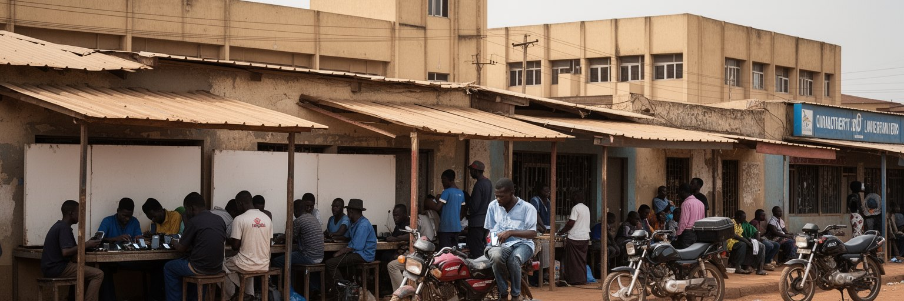
アブジャには、仕事、教育、政府機関との接点、起業、芸能、建設、サービス業を求めて若い世代が集まります。大学や専門学校、通信企業、IT関連の小さな事業、配車、宅配、飲食、イベント、警備、ホテル、家事労働、行政補助の仕事が都市の入口になります。英語を共通語にしながら、ハウサ語、ヨルバ語、イボ語、ピジンなどが市場、職場、バス停で混ざります。若者にとって首都は機会の場所ですが、家賃、交通費、非正規雇用、学歴とコネの差、治安、性別によるリスクも大きいです。履歴書を持って省庁や企業を回る人、携帯電話で仕事を受ける配達員、夜に勉強する学生、地方へ仕送りする若い労働者は、首都の成長を支えます。アブジャの労働市場は、石油や国家予算だけではなく、若者が都市で自分の足場を探す日々の試行錯誤で動いています。成功物語の裏には、不安定な賃金や長い待機時間があり、教育を受けても希望する仕事に届かない人も多いです。若い人口を都市の力に変えるには、交通、職業訓練、住宅、公共空間、インターネット、女性の安全が必要になります。首都が成長を約束する場所であり続けるかは、若者の努力を制度が受け止められるかにかかっています。小さな起業や副業は、失業の穴を埋めるだけでなく、アフロビーツ、サッカー観戦、SNSの発信が混じる都市文化も作ります。学び直しの場が増えるほど、都市への移動は一度きりの賭けではなくなります。
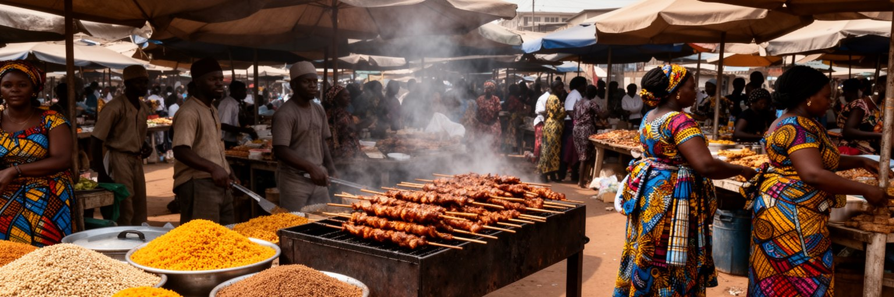
アブジャの食文化は、計画都市の整然としたイメージよりずっと多声的です。市場や屋台には、北部のスヤ、トゥウォ、ミヤンクカ、南部のジョロフライス、エグシ、ペッパースープ、焼き魚、豆料理、プランテン、茶、果物、輸入食品が並びます。公務員街の食堂、建設現場近くの屋台、大学周辺の軽食、ホテルのビュッフェ、郊外市場の穀物売りは、それぞれ異なる所得層と出身地をつなぎます。食料はナイジェリア各地から道路で運ばれ、燃料価格、治安、雨季、通貨、農村の収穫に影響されます。市場では女性商人、若い荷運び、運転手、料理人、冷蔵や発電機を使う店主が細かな労働を重ねます。アブジャの食を読むことは、味だけでなく、国土の広さと物流の脆さを見ることです。都市の中心部が計画されていても、食卓は非公式な信用、親族、宗教行事、季節の価格に支えられています。物価が上がれば、家族は量や品目を変え、屋台の客足も変わります。市場は観光の彩りである前に、首都の食料安全保障を担う生活基盤です。多民族都市の共存は、演説よりも、隣の客と同じ屋台で食べる時間に静かに現れます。昼休みの食堂、夜の焼き場、週末の買い出しは、出身地の違う人が同じ都市の値段と味を共有する場になります。食は首都の最も身近な統合装置です。価格の変化は家計の緊張を早く知らせ、都市の不安を市場から伝えます。
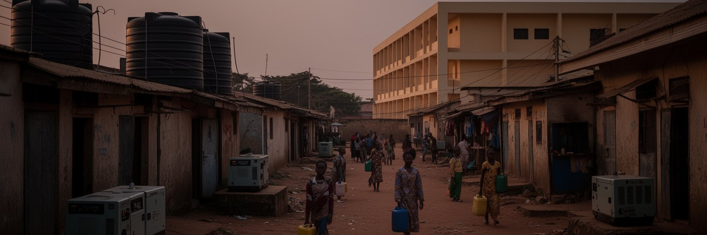
アブジャは計画首都として広い道路や官庁街を持ちますが、すべての住民が安定した水と電気を得ているわけではありません。中心部や高所得地区では自家発電、貯水タンク、警備、舗装道路を備えた住宅が多い一方、郊外や非公式居住地では給水車、井戸、発電機、バッテリー、共同トイレ、未舗装路に頼る生活が続いています。停電は冷蔵、通信、夜の学習、診療所、商店、理髪店、飲食業に影響し、水不足は家事と通学の時間を奪います。雨季には排水不足と冠水が道路を止め、乾季には埃と水需要が増えます。首都であることは、都市サービスが均等に届くことを意味しません。むしろ行政と富が集中するため、生活インフラの差は目立ちやすいです。アブジャの暮らしを理解するには、大きな建物よりも、誰が水を買い、誰が発電機の燃料を負担し、誰が夜道を安全に歩けるかを見る必要があります。公共インフラが弱いと、個人が自力で補う費用が増え、貧しい世帯ほど時間と健康を失います。都市の尊厳は、首都らしい景観だけでなく、子どもが宿題をできる灯り、病院が薬を冷やせる電力、家庭が毎日使える水によって測られます。水売りの価格や発電機の燃料代は、家計の見えにくい税のように積み重なります。夜の発電機の音や雨上がりの泥道も、公共サービスの差を知らせる生活の感覚です。修理を担える制度と予算がなければ、設備はすぐに使えなくなります。
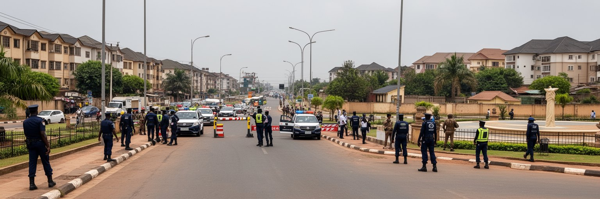
アブジャは比較的新しい計画首都として、安全で秩序ある都市であることを求められてきました。しかしナイジェリア全体の治安課題、誘拐、武装集団、政治的緊張、経済不安、都市犯罪は、首都の生活にも影響します。官庁、外交施設、高級住宅、ホテル、宗教施設、交通の結節点では警備が強く、検問や道路封鎖が日常の移動を変えることもあります。安全は警察や軍だけでなく、街灯、公共交通、土地管理、若者の雇用、近隣の信頼、情報の透明性によって作られます。立ち退きや非公式居住地の取り締まりは、都市美化や治安の名で行われることがありますが、住民の生活を壊せば不安定さを増やします。アブジャの都市管理は、首都の威信を守ることと、低所得住民の居住権や仕事を守ることの間で常に揺れます。治安対策が一部地区だけを守るなら、都市全体の安全にはなりません。夜に働く人、通勤する女性、郊外から戻る学生、市場の商人が安心して移動できるかが、首都の公共性を示します。アブジャを安全な都市にするには、監視を増やすだけでなく、交通、照明、住宅、雇用、司法への信頼を同時に整える必要があります。秩序は人を排除することでなく、暮らしを続けられる条件を広げることで強くなります。安全情報が早く正確に届くこと、苦情を出せる窓口があることも、首都の信頼を支えます。安心して集まれる公園や市場も、都市管理の成果です。
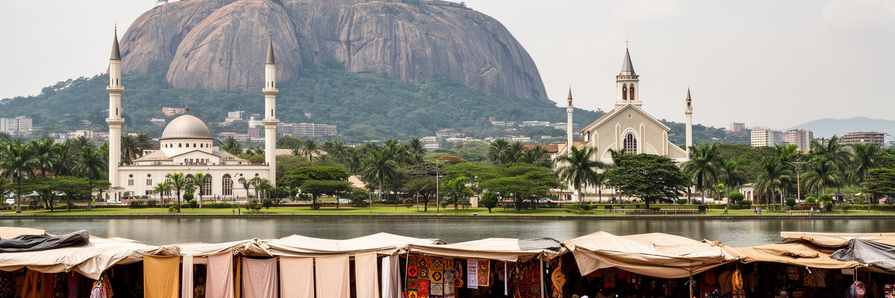
アブジャの観光は、古い港町や王都のような長い街路史ではなく、新しい首都がどのように国家の象徴を作ったかを読む旅になります。アソロック、国立モスク、国立キリスト教センター、ミレニアムパーク、ジャビ湖、芸術村、市場、周辺の丘陵は、計画首都の理念と日常生活を結ぶ入口です。旅行者は広い道路と整った行政景観に目を奪われやすいですが、都市の理解は、工芸品を売る人、スヤの煙、郊外へ向かうバス、建設現場、礼拝の時間まで見て深まります。アブジャは首都として国際会議やビジネス客を受け入れる一方、週末の公園、結婚写真、家族の外出、学生の集まりが都市の柔らかい記憶を作ります。観光資源を育てるには、治安、歩行環境、案内、公共交通、文化施設の維持、地元の店への利益が必要です。新しい都市だから歴史がないのではなく、首都移転、先住地域、土地取得、建設、移住、宗教共存、連邦政治という現代史が凝縮しています。アブジャを歩くことは、ナイジェリアが自分をどのように見せたいか、そして住民がその空間をどのように使い直しているかを読むことです。観光の価値は、写真の名所だけでなく、国家の理想と生活の現実を同じ視野に入れる点にあります。訪問者が地元の案内人や市場を通じて街を知るほど、記念碑の外側にある暮らしの厚みが見えてきます。週末の湖畔や公園には、子どもの遊びや市民自身が首都を楽しむ記憶も重なります。
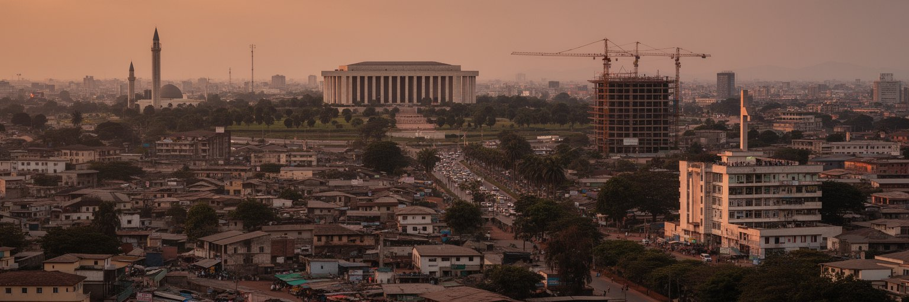
アブジャは、ナイジェリアの巨大さを整った形で見せようとする都市です。ラゴスの歴史的な商業力とは違い、ここには中央に置かれた首都として、民族と宗教の均衡、連邦政治、外交、行政、建設、治安、若い労働、衛星都市の膨張が集まります。広い道路や官庁街は国家の秩序を表しますが、その周囲では家賃、交通費、水、電気、土地権利、雇用の不安が残ります。国立モスクと国立教会、アソロック、ECOWASの会議、建設現場、郊外市場、通勤バスを重ねて見ると、アブジャは単なる人工的な首都ではなく、ナイジェリアの課題を濃縮する生活空間として見えてきます。計画首都の成功は、建物が増えることだけでは測れません。周縁に住む人が安全に働けるか、若者が学びと仕事へ届くか、宗教と出身地の違いを公共空間が受け止められるか、国家予算が水や学校や交通に変わるかが問われます。アブジャを読むことは、国家統合の理念と都市化の現実を同時に読むことです。中心部の威信と郊外の生活を切り離さずに見る時、この都市は現代アフリカの首都が抱える希望と矛盾を最も明確に示します。新しい首都は、完成した記念碑ではなく、巨大国家が毎日交渉しながら使い続ける共通の舞台です。計画された中心と予測不能な周縁の間に、夜の屋台の光、ラジオの政治討論、雨季の道路、サッカーを見る若者の声が重なります。アブジャを見る目は、国家と日常を同時に追う必要があります。